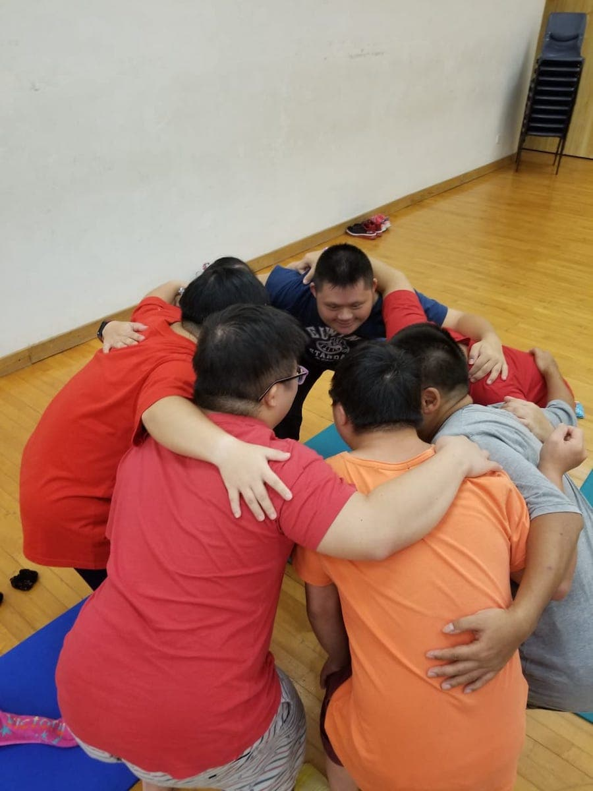
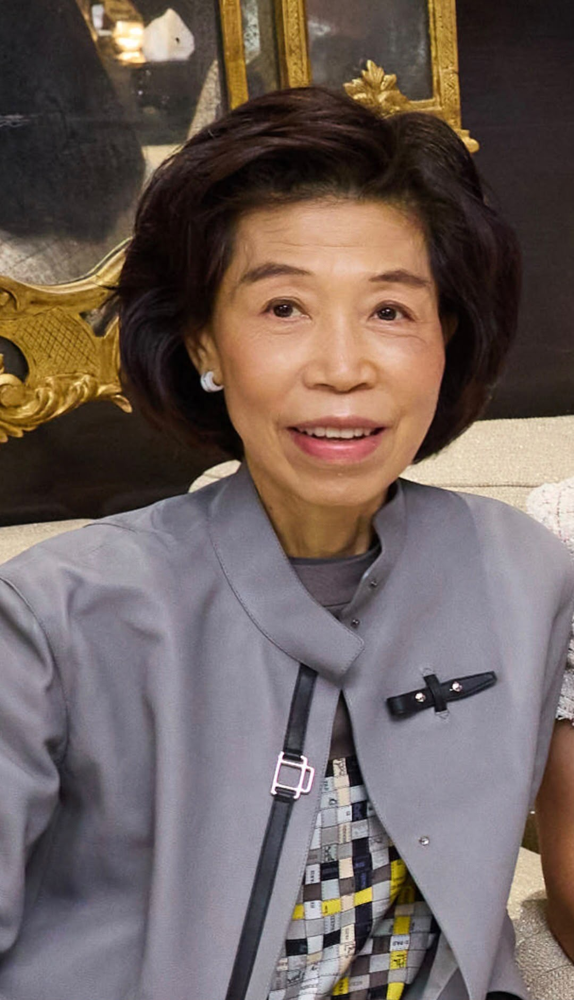

Sport
Designed without limitations.
A broad range of sport, strength, coordination, and mental health activities helps members build skill and confidence.
Find a sport activityAbout
Registered Hong Kong charity. Sport, nutrition, and family support for people with Down syndrome, autism, and other neurodivergences — and for their families. Home base: San Po Kong.
Scroll for who we are, what we run, and how you can join. 01 · Who
Who we are
We are Love 21 Foundation. The “21” points to the 21st chromosome: trisomy 21, which causes Down syndrome.
#Somuchability is the line we work from: build around what people can do. We want to change the narrative from disability to somuchability.
What we do
We provide sports, fitness, nutrition support (one-to-one dietitian work since 2021), cooking classes, parent sessions, and counselling.
That means 500+ families, 800+ sessions a month, 90+ activity types, and over 1,000 volunteer hours a month. Registered members and families use the programmes free of charge.
What we aim for
We want people with Down syndrome, autism, and other neurodivergences to have the same chance as anyone else to train, work, live more independently, and be seen for their ability.
That means supporting the whole family, cutting stigma by letting Hong Kong meet members face to face, and growing education and volunteering so those meetings happen more often.
Hire from the community
Offices and partners can book Love 21 members for work: swim coaching, kitchen demos, art commissions, dance sessions, yoga, and similar member-led workshops.
All you need to do is pick a person, choose a free slot, and send a request. See who you can hire
Volunteer
Volunteering tasks are split into in-person and async tasks. Async tasks are online, simple, and take very little time — some as short as 15 minutes.
That makes volunteering accessible to people who live far away or have limited time. Open volunteer tasks
Our programmes
Sport opens the door. Nutrition, family support, and community participation help change last.
A broad range of sport, strength, coordination, and mental health activities helps members build skill and confidence.
Find a sport activity
One-to-one guidance and cooking lessons help families build routines that work in everyday life.
Find a nutrition activity
Parent-only sessions, counselling, and shared activities strengthen the network around each participant.
Ask about family support
Corporate sessions and member-led experiences challenge assumptions and make inclusion tangible.
Plan a partnershipFinancial reports
Transparency should be easy to find, easy to read, and connected to the work it describes.
Love 21 Foundation is a registered charity under Section 88 of Hong Kong's Inland Revenue Ordinance. The official annual reports provide the source of truth for programme progress and financial stewardship.
HKD, rounded to the nearest thousand in the annual report.
The transparency page keeps the demo allocation summary separate from official audited reports.
Open the transparency summaryOur staff
Coaches, nutrition professionals, programme managers, and community builders make the work happen every week.
Founder / CEO Jeff Rotmeyer — jeff@love21foundation.com. For the full team directory, use Love 21's official staff page.

Board & organisation
Governance brings together people from different professional backgrounds who share a commitment to Hong Kong's neurodiverse community.
Board member
Carol Chan Portrait not available Eleni Symeonidou
Eleni Symeonidou
 Jeff Sayed
Jeff Sayed
 Matthew Hosford
Matthew Hosford
Board member
Kevin Wong Portrait not available Young-Sook Stewart
Young-Sook Stewart
 Lobo Cheung
Lobo Cheung
 Dan Maley
Dan Maley
 Edith Chen
Edith Chen
 James Barrett
James Barrett
 Raymond Tam
Raymond Tam

Dr. Ruby Ng
From the community
Park walk
Your bag: yellow, with a red 21 on the front
Level 1 of 4
Level 1 · Crowd — walk through the people
WASD move · drag to look · Exit stays clickable (cursor on)
Crowd